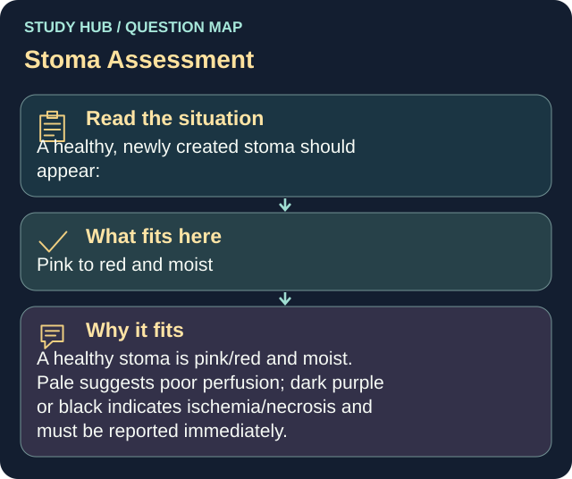

A healthy, newly created stoma should appear:
Answer
Pink to red and moist
Reasoning
A healthy stoma is pink/red and moist.
Clinical detail
Pale suggests poor perfusion; dark purple or black indicates ischemia/necrosis and must be reported immediately.
Why the other answers do not fit
- Pale and dry
- Dark purple
dark purple or black indicates ischemia/necrosis and must be reported immediately.
- Black
dark purple or black indicates ischemia/necrosis and must be reported immediately.
Shared reasoning for choices without a separate note: A healthy stoma is pink/red and moist. Pale suggests poor perfusion; dark purple or black indicates ischemia/necrosis and must be reported immediately.
